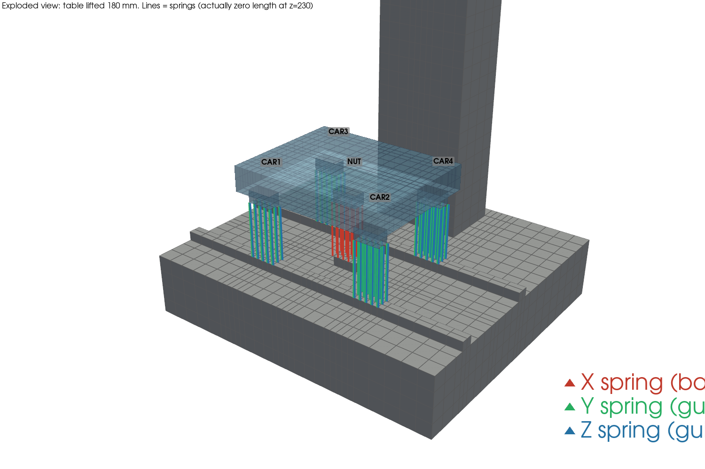
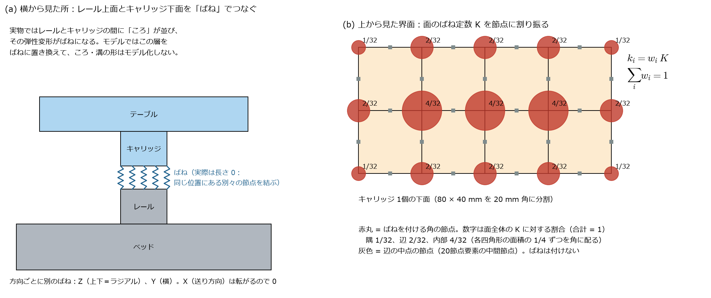
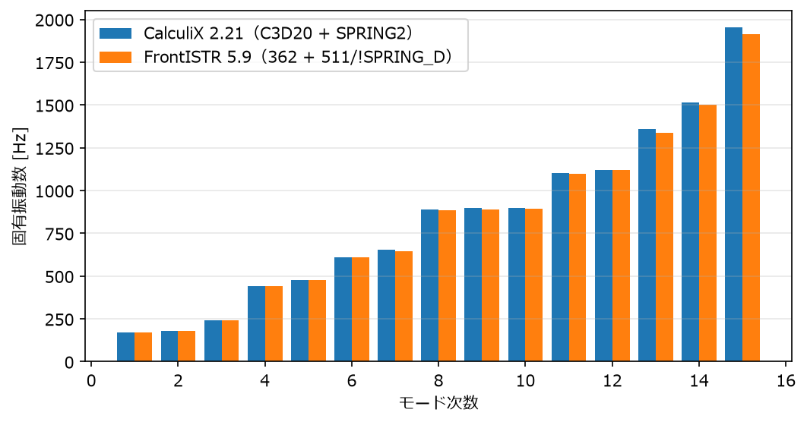
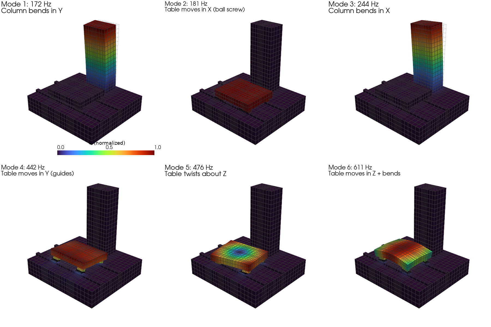
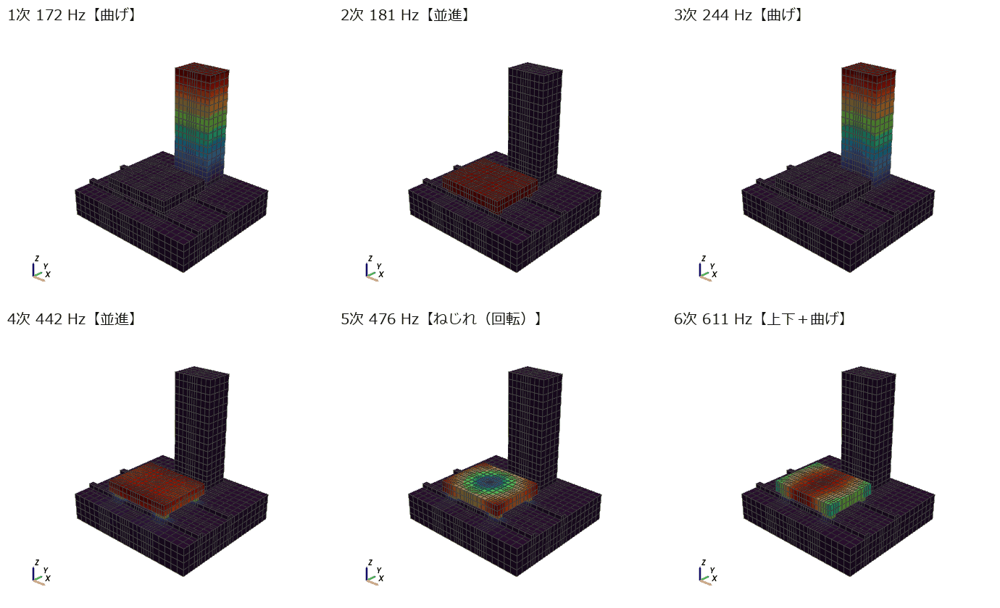
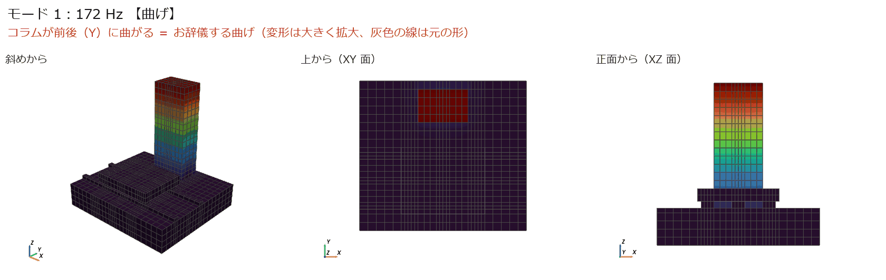
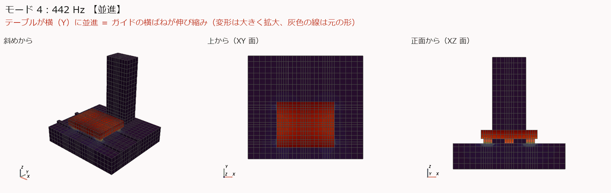
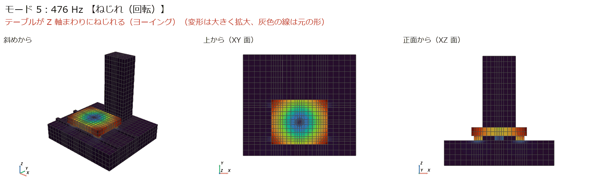
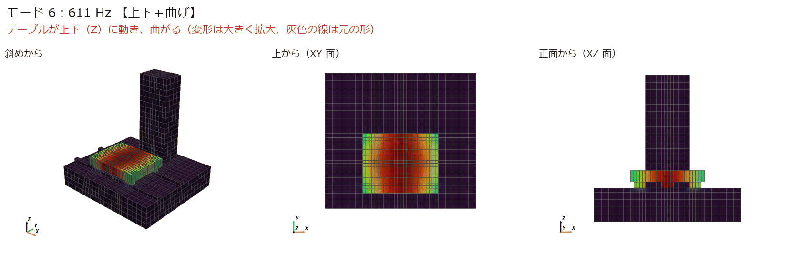
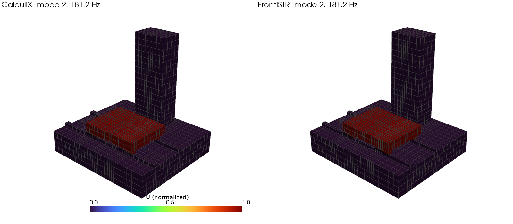

← docs 目次 ｜ ⌂ トップ ｜ ← 前: ref006 6.0の変更点と5.9との比較 ｜ 次: ana002 簡易工作機械の周波数応答解析 →
作成: 2026-11-07 解析フォルダ: analysis/ana001_ccx_fistr_modal
| ソフト | バージョン | 入れ方（管理者権限なし） |
|---|---|---|
| CalculiX | 2.21 | Ubuntu のパッケージ calculix-ccx と依存ライブラリを
apt-get download → dpkg -x で
~/opt/ccxroot に展開。実行は ~/opt/ccx.sh |
| FrontISTR | 6.0（当初 5.9 で実行。6.0 でも結果は同じ → ref006） | ソースを GitLab から取得して逐次版をビルド（MPI・METIS・MUMPS
なし、OpenMP あり）→ ~/opt/frontistr/bin/fistr1 |
| Python | 3.12 | ~/opt/venv（numpy, matplotlib, pyvista, cmake） |
可視化は ParaView と同じ VTK を使う pyvista で行った。結果は ParaView でも開ける（8 章）。

テーブルを 180 mm 持ち上げて描いた分解図。線がばね（実際は長さ 0）。赤 = X（ボールねじ）、緑 = Y（ガイド横）、青 = Z（ガイド上下）。
| 部品 | 寸法 [mm] | メモ |
|---|---|---|
| ベッド | 1000 × 900 × 200 | 底面を全拘束 |
| レール（2本） | 幅 40、高さ 30、長さ 1000 | ベッドと一体（同じ節点を共有） |
| コラム | 300 × 200 × 高さ 800 | ベッドと一体 |
| ボールねじ支持台 | 80 × 40 × 30 | ナットの真下。ベッドと一体。ボールねじの軸方向剛性をここで受ける（簡略化） |
| テーブル | 500 × 400 × 80 | |
| キャリッジ（4個） | 80 × 40 × 40 | テーブルと一体 |
| ナットブラケット | 80 × 40 × 40 | テーブルと一体 |
C3D20、FrontISTR
362）4,288 要素、22,258 節点| ばね | つなぐ面 | 方向 | 1面あたりのばね定数 | 実物 |
|---|---|---|---|---|
| CAR1〜CAR4 | レール上面 ⇔ キャリッジ下面（z = 230 mm） | Y（横） | 5.6 × 10⁵ N/mm（560 N/µm） | リニアガイドの横剛性 |
| 〃 | 〃 | Z（上下） | 8.0 × 10⁵ N/mm（800 N/µm） | リニアガイドのラジアル剛性 |
| 〃 | 〃 | X（送り） | 入れない（0） | ガイドは転がる方向には支えない |
| NUT | 支持台上面 ⇔ ナットブラケット下面 | X（送り）だけ | 2.0 × 10⁵ N/mm（200 N/µm） | ボールねじ送り系の軸方向剛性 |

SPRING2 要素（2節点、自由度指定）511 要素（2節点コネクタ）＋
!SPRING_D（自由度指定ばね）分布ばねにする理由: 面全体に分散して付けると、キャリッジの傾き（モーメント）に対する剛性も自然に入る。 1 点だけでつなぐと、キャリッジが首を振る方向に支えがなくなる。
面ごとに代表点を作り、面の節点を拘束式（MPC）で代表点に結び、代表点どうしをばねでつなぐ方法も、両ソルバで動くことを確認した。 → ana003
*NODE, NSET=NALL ← 節点（番号, x, y, z）
1, 0, 0, 0
...
*ELEMENT, TYPE=C3D20, ELSET=EBED ← ベッド＋レール＋コラムの20節点六面体
1, 1, 2, ..., 15, （1行目に要素番号＋15節点、2行目に残り5節点）
16, 17, 18, 19, 20
*ELEMENT, TYPE=C3D20, ELSET=ETABLE ← テーブル＋キャリッジ＋ナットブラケット
...
*ELEMENT, TYPE=SPRING2, ELSET=SP_CAR1_2_0 ← ばね要素（要素番号, ベッド側節点, テーブル側節点）
4289, 2912, 18940
*SPRING, ELSET=SP_CAR1_2_0 ← このグループのばね定数
2, 2 ← ベッド側の自由度2(Y) と テーブル側の自由度2(Y) をつなぐ
1.750000e+04 ← ばね定数 [N/mm]（= 560,000 × 1/32）
... （面・方向・割合ごとにグループを分けて 27 組）
*NSET, NSET=FIX ← ベッド底面の節点
*NSET, NSET=MON ← テーブル上面中央（ana002 の加振点）
*MATERIAL, NAME=CASTIRON
*ELASTIC
120000.0, 0.27 ← ヤング率 [MPa], ポアソン比
*DENSITY
7.3e-09 ← 密度 [t/mm^3]
*SOLID SECTION, ELSET=EBED, MATERIAL=CASTIRON
*SOLID SECTION, ELSET=ETABLE, MATERIAL=CASTIRON
*BOUNDARY
FIX, 1, 3 ← 底面の x, y, z を固定
*STEP
*FREQUENCY, STORAGE=YES ← 固有値解析。STORAGE=YES で次の周波数応答に結果を渡せる
15 ← 求めるモード数
*NODE FILE ← .frd（結果ファイル）に変位を出力
U
*END STEPポイント:
SPRING2
は自由度を指定するばね。*SPRING の 2
行目「2, 2」は「1つ目の節点の Y と 2つ目の節点の Y」の意味*SPRING には 1 つの値しか書けないので、値ごとに
ELSET を分けているmachine.dat（固有振動数の表）と
machine.frd（モード形状）メッシュファイル（.msh）:
!NODE
...
!ELEMENT, TYPE=362, EGRP=EBED ← 20節点六面体（節点の順番は CalculiX と同じ）
!ELEMENT, TYPE=362, EGRP=ETABLE
!ELEMENT, TYPE=511, EGRP=SP0 ← 2節点コネクタ要素（ばね用）
4289, 2912, 18940
!MATERIAL, NAME=CASTIRON, ITEM=2 ← 鋳鉄（ヤング率・ポアソン比、密度）
!MATERIAL, NAME=SPMAT0, ITEM=1 ← ばね用の材料（中身はダミー。★下の注意）
!ITEM=1, SUBITEM=2
1.0, 0.3
!SECTION, TYPE=INTERFACE, EGRP=SP0, MATERIAL=SPMAT0 ← ばね要素には TYPE=INTERFACE
!NGROUP, NGRP=FIX
!NGROUP, NGRP=MON制御ファイル（.cnt）:
!SOLUTION, TYPE=EIGEN ← 固有値解析
!EIGEN
15, 1.0E-8, 300 ← モード数, 収束判定, 最大反復回数（Lanczos 法）
!BOUNDARY
FIX, 1, 3, 0.0 ← 底面の 1〜3 方向を 0 に固定
!MATERIAL, NAME=SPMAT0 ← ばね定数はここ（制御ファイル側）で与える
!SPRING_D
2, 2, 1.750000e+04 ← 節点1の自由度2 と 節点2の自由度2 を k=17500 N/mm でつなぐ
...
!SOLVER, METHOD=DIRECT ← 直接法ソルバ
!WRITE,RESULT / !WRITE,VISUAL ← 結果ファイルと VTK 出力★ 詰まった点: 制御ファイルの !MATERIAL, NAME=SPMAT0
は、メッシュ側に同じ名前の材料が無いと
### Error: Fail in read in material definition
で止まる。メッシュ側にダミーの材料（!ITEM=1
に適当な値）を置いて解決した。
| モード | CalculiX [Hz] | FrontISTR [Hz] | 差 [%] | ゆれ方 |
|---|---|---|---|---|
| 1 | 172.5 | 172.2 | −0.16 | コラムが前後（Y）に曲がる |
| 2 | 181.2 | 181.2 | 0.00 | テーブルが送り方向（X）に動く（ボールねじのばね） |
| 3 | 243.5 | 243.2 | −0.11 | コラムが左右（X）に曲がる |
| 4 | 442.0 | 441.8 | −0.05 | テーブルが横（Y）に動く（ガイドの横ばね） |
| 5 | 475.7 | 474.4 | −0.27 | テーブルが Z 軸まわりにねじれる |
| 6 | 610.6 | 610.9 | +0.05 | テーブルが上下（Z）に動き、曲がる（ガイドの上下ばね） |
（7〜15次は results/frequencies.md。差は最大 1.8 %）
!SPRING_D）は固有値解析でも効くことを確認した（マニュアルには明記されていなかった）

色 = 変位の大きさ（最大を 1 に正規化）。灰色の線 = 変形前の形。変形は誇張している。
静止画だと「並進（平行にずれる）」と「ねじれ（回る）」の区別がつきにくいので、各モードを動かして 3 方向から見る。 **上から（XY 面）**の図で、平行にずれれば並進、回っていればねじれ（Z 軸まわり）と判断できる。

| モード | 種類 | 見分け方 |
|---|---|---|
| 1次 173 Hz | 曲げ（コラム） | 正面図ではほぼ動かず、斜め図でコラム上端が前後に振れる |
| 2次 181 Hz | 並進（テーブル X） | 上から見て、テーブルが形を保ったまま左右（X）に平行移動 |
| 3次 243 Hz | 曲げ（コラム） | 正面図でコラム上端が左右に振れる |
| 4次 442 Hz | 並進（テーブル Y） | 上から見て、テーブルが上下（Y）に平行移動 |
| 5次 476 Hz | ねじれ（テーブル Z 軸まわり） | 上から見て、テーブルが中心のまわりに回る。中心は動かない（色が青） |
| 6次 611 Hz | 上下＋曲げ | 正面図でテーブルが上下し、弓なりに曲がる |
各モードの 3 方向アニメーション（左: 斜め、中: 上から、右: 正面から）:
1次 173 Hz：コラムの Y 曲げ

2次 181 Hz：テーブルの X 並進（ボールねじ）
3次 243 Hz：コラムの X 曲げ
4次 442 Hz：テーブルの Y 並進（ガイド横ばね）

5次 476 Hz：テーブルの Z 軸まわりのねじれ（ヨーイング）

6次 611 Hz：テーブルの上下＋曲げ

生成スクリプト: make_gifs.py（pyvista で 20 コマ描画 → Pillow で GIF に。変形は誇張、灰色の線は元の形）
これらのモードが周波数応答（コンプライアンス）のどのピークになるかは ana002 の 4.2 節 を参照。

| モード | 手計算モデル | 手計算 | FEM | 差の理由 |
|---|---|---|---|---|
| 2次 テーブル X | テーブル質量 \(m\) = 0.1215 t をばね \(K\) = 2.0 × 10⁵ N/mm 1 本で支える：\(f = \frac{1}{2\pi}\sqrt{K/m}\) | 204 Hz | 181 Hz | ベッド・支持台・テーブルの変形がばねと直列に入って柔らかくなる |
| 1次 コラム Y | 片持ちはり \(f_1 = \frac{1.875^2}{2\pi}\sqrt{\frac{EI}{\rho A L^4}}\)、\(L\) = 800 mm、断面 300 × 200 | 205 Hz | 172 Hz | 根元（ベッド）が変形する、せん断変形 |
| 6次 テーブル Z | 4 キャリッジの上下ばね 3.2 × 10⁶ N/mm で \(m\) を支える | 817 Hz | 611 Hz | テーブル自体の曲げが加わる |
どれも FEM が手計算より低く、理由も説明できるので妥当と判断した。
mode01_172.5Hz 〜
mode15_...：各モードの変位part：0 = ベッド・コラム、1 = テーブル、2 =
ばねpart を 2〜2）fistr/machine_eigen_vis_psf.000N.pvtu（N =
モード番号）をそのまま開けるcd analysis/ana001_ccx_fistr_modal
~/opt/venv/bin/python make_inputs.py # 入力ファイルを作る
(cd ccx && ~/opt/ccx.sh -i machine) # CalculiX
(cd fistr && LD_LIBRARY_PATH=~/opt/ccxroot/usr/lib/x86_64-linux-gnu/blas:~/opt/ccxroot/usr/lib/x86_64-linux-gnu/lapack ~/opt/frontistr/bin/fistr1)
~/opt/venv/bin/python post.py # 表とグラフ
~/opt/venv/bin/python post_vtk.py # VTU 出力と 3D 図← docs 目次 ｜ ⌂ トップ ｜ ← 前: ref006 6.0の変更点と5.9との比較 ｜ 次: ana002 簡易工作機械の周波数応答解析 →